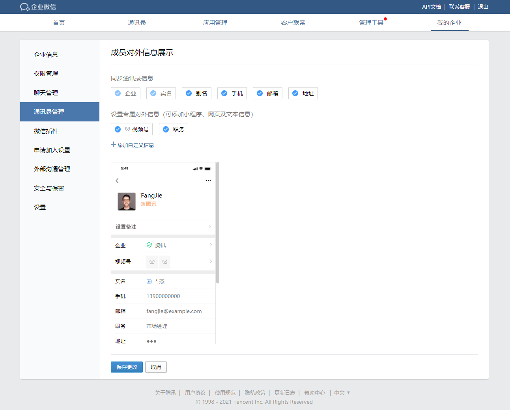

通过接口完成成员的对外信息设置时可参考以下步骤：
一、在管理端添加对外成员的属性，支持文本、链接、小程序类型

二、调用创建成员（user/create）或更新成员（user/update）接口设置成员对外信息。
三、除user/create、user/update外，我们在 user/get，externalcontact/get 等相关接口也增加了external_profile字段，该字段含义在本篇统一描述。
字段内容:
"external_profile": { "external_corp_name": "企业简称", "wechat_channels": { "nickname": "视频号名称", "status": 1 }, "external_attr": [ { "type": 0, "name": "文本名称", "text": { "value": "文本" } }, { "type": 1, "name": "网页名称", "web": { "url": "http://www.test.com", "title": "标题" } }, { "type": 2, "name": "测试app", "miniprogram": { "appid": "wx8bd80126147dfAAA", "pagepath": "/index", "title": "miniprogram" } } ] }点击复制
字段说明：
| 参数 | 说明 | 设置时是否必填 |
|---|---|---|
| external_attr | 属性列表，目前支持文本、网页、小程序三种类型 | 是 |
| external_attr.type | 属性类型: 0-文本 1-网页 2-小程序 | 是 |
| external_attr.name | 属性名称： 需要先确保在管理端有创建该属性，否则会忽略 | 是 |
| external_attr.text | 文本类型的属性 | type为0时必填 |
| external_attr.text.value | 文本属性内容，长度限制32个UTF8字符 | 否 |
| external_attr.web | 网页类型的属性，url和title字段要么同时为空表示清除该属性，要么同时不为空 | type为1时必填 |
| external_attr.web.url | 网页的url，必须包含http或者https头 | 否 |
| external_attr.web.title | 网页的展示标题，长度限制12个UTF8字符 | 否 |
| external_attr.miniprogram | 小程序类型的属性，appid和title字段要么同时为空表示清除该属性，要么同时不为空 | type为2时必填 |
| external_attr.miniprogram.appid | 小程序appid，必须是有在本企业安装授权的小程序，否则会被忽略 | 否 |
| external_attr.miniprogram.title | 小程序的展示标题，长度限制12个UTF8字符 | 否 |
| external_attr.miniprogram.pagepath | 小程序的页面路径 | 否 |
| external_corp_name | 企业对外简称，需从已认证的企业简称中选填。可在“我的企业”页中查看企业简称认证状态。 | 否 |
| wechat_channels | 视频号属性。须从企业绑定到企业微信的视频号中选择，可在“我的企业”页中查看绑定的视频号。第三方仅通讯录应用可获取；对于非第三方创建的成员，第三方通讯录应用也不可获取。注意：externalcontact/get不返回该字段 | 否 |
| wechat_channels.nickname | 视频号名字（设置后，成员将对外展示该视频号） | 否 |
| wechat_channels.status | 对外展示视频号状态。0表示企业视频号已被确认，可正常使用，1表示企业视频号待确认 | 否 |